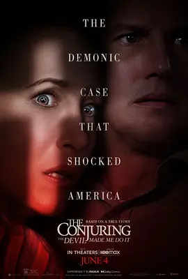

6.5
招魂3
The Conjuring: The Devil Made Me Do It
2021
英国
评分 6.5
导演:
迈克尔·查维斯
演员:
帕特里克·威尔森 / 维拉·法米加 / 卢瑞·奥康纳 / 莎拉·凯瑟琳·胡克 / 朱利安·希威德
类型:
恐怖,悬疑,惊悚
剧情简介
影片以 1981 年震动全美的真实案件为蓝本，以更贴近现实的方式展开故事。年幼的大卫在家中接连经历离奇现象，夜里总能看见阴影在房间角落蠕动，摇椅上甚至坐着模糊的怪异身形。他的身体出现诡异划痕，行为也逐渐失控，仿佛正被某种看不见的存在牵引。恐惧笼罩整个家庭，他们不得不向沃伦夫妇寻求帮助。埃德与洛琳进入房屋后，很快察觉到不寻常的气息：空气因某种力量而变得沉重，角落里仿佛潜伏着被隐藏的恶意。洛琳的灵视让她看到大卫周身缠绕的阴影，而驱魔仪式的进行更像是一场与深渊对峙的较量。混乱中，大卫姐姐的未婚夫亚恩主动试图“替代”孩子承受痛苦，却也因此与黑暗产生了危险联系。几个月后，一桩谋杀案令所有人陷入震惊——亚恩在冲突中杀死房东，而他声称“行凶时自己不在身体里”。随着调查深入，沃伦夫妇发现表面上的恶灵附身背后似乎还有人为操控，更复杂的诅咒链条逐渐浮现。案件不再只是灵异现象那么简单，而是牵扯到信仰、心灵脆弱点与极端邪恶的精心布局。影片在恐怖氛围之上强化了调查与人性层面的描绘：夫妻两人在精神压力与现实危险间不断挣扎，而随着他们一步步逼近真相，真正的威胁也迅速逼近。惊悚与诡异贯穿全片，同时也延续系列作品关注“恐惧背后的故事”，让观众感受到来自现实与超自然双重压力的紧迫感。